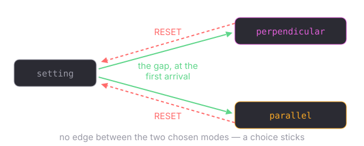

The two machines it is
The tilt as a state machine — 24 states, two links out of each

next prev — the only two moves there are
a turn FOLLOWS one of these links, so it cannot land between two states or off the ring, and no rule anywhere adds 1 or takes a modulus
the seam in the middle is 23 → 0. Nothing detects it and no rule mentions it — the last state's next simply IS the first, fixed when the ring was built
The mode as a state machine — three modes, four transitions

setting is where a node starts and what a reset restores — it is the zero value, so a node is in it without anything having to put it there
there is NO edge between perpendicular and parallel: a chosen mode sticks, and a second choice arriving mid-run is ignored
every case, mode by mode and length by length, is on Cases
Both machines, and the arithmetic they come out of
Moved to their own page: Both machines as a transition function, and the arithmetic they come out of.